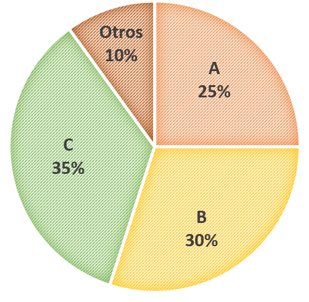

Evaluación digital
Tus respuestas se guardan automáticamente en esta tablet.
Una pareja de esposos solicita un crédito vehicular por un monto de $ 13 500 para la compra de un automóvil 0 km. La entidad le cobra una tasa de interés del 18 % anual por un periodo de tres años. ¿Cuánto pagará de intereses al finalizar el préstamo?
Sebastián resolvió cierto número de problemas en tres días. Si el primer día resolvió 3/10 lo del total; al día siguiente, 4/7 del resto, y el último día, los 18 problemas restantes, ¿cuántos problemas resolvió en los tres días?
Desde un punto B del suelo, se observa el punto más alto C de una torre con un ángulo de 60°. Retrocediendo 15 m, se ve el mismo punto con un ángulo de 30°. Halla la altura de la torre.
La cantidad de figuritas que tiene Tamara excede en 10 a la cantidad de figuritas que tiene Sofía. Si entre las dos tienen 90 figuritas, ¿cuántas figuritas tiene Tamara?
Manuel decide hacer una casa prefabricada en 18 días, pero tardó 6 días más por trabajar 2 horas menos cada día. ¿Cuántas horas diarias trabajó?
Andrés ha estado visitando tiendas de venta de electrodomésticos en línea y en la tienda Vive Bonito ha quedado sorprendido por la oferta de una cocina que se encontraba al 40 % de descuento; y si la compra se realizaba en línea, utilizando la tarjeta de la tienda, había un 10 % de descuento adicional. Si el precio de venta de la cocina era de S/ 1699, ¿cuál será el descuento único?
La tabla presenta información parcial sobre el peso de 40 niños. Complétala y responde preguntas 8 y 9.
¿Cuál es la frecuencia relativa de los niños que pesan menos de 20 kg?
¿Qué porcentaje representa la cantidad de niños que pesan más de 20 kilogramos?
El gráfico de sectores muestra la preferencia del público por los candidatos A, B y C a la alcaldía de su distrito. Si los simpatizantes del candidato B son 6000 personas, ¿cuántas personas fueron encuestadas?

Ana observa su recibo de internet y se da cuenta que tiene que pagar más de lo que pensaba, ya que no había considerado el 18% de IGV. Si el monto sin IGV es S/. 86, ¿cuánto tiene que pagar?
El costo de fabricación de un producto es S/. 400 y se vende al comerciante ganando el 20%. Si el comerciante vende el producto al consumidor con una ganancia del 20% sobre su precio de compra, ¿cuánto pagará el consumidor por el producto?
Paulina vendió dos lavadoras a S/. 1 200 cada una. Si en la venta de la primera lavadora ganó el 20% y en la venta de la segunda perdió el 20%, ¿cuánto ganó o perdió en total?
Escribe solo el número de la respuesta.
A una fiesta concurren 400 personas entre hombres y mujeres, asistiendo 3 hombres por cada 2 mujeres. Luego de 2 horas, por cada 2 hombres hay una mujer. ¿Cuántas parejas se retiraron?
Las edades de Carla y Ricardo están en relación de 7 a 5, respectivamente. Si dentro de 9 años estarán en la relación de 5 a 4, ¿Cuál es la edad de Carla?
Primero se guardará en la tablet. Si hay Internet y está configurada la sincronización, también se enviará a Google Sheets.
Sus respuestas han sido guardadas.